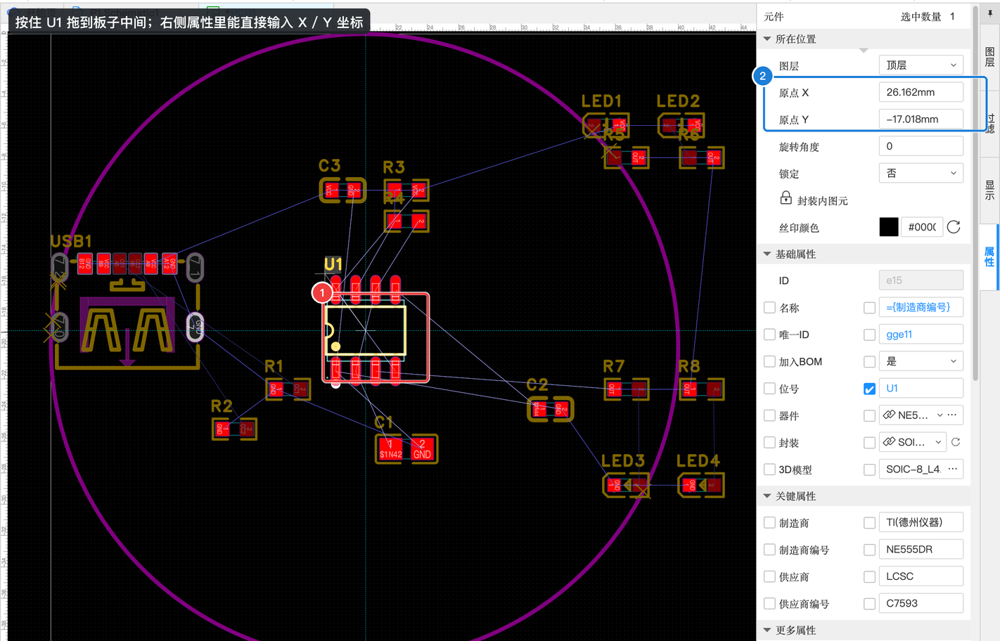
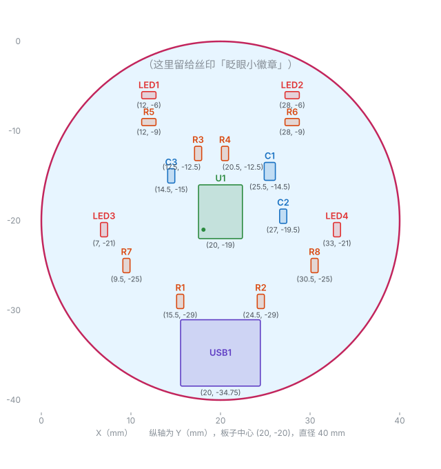
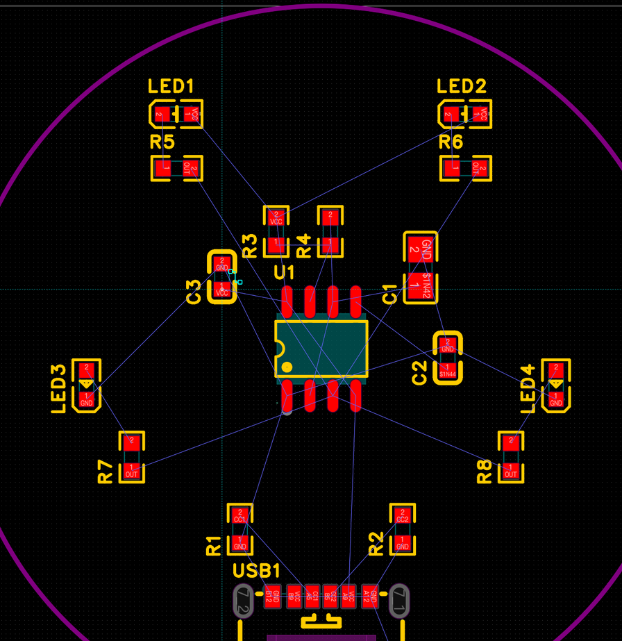

A-5 布局：把元件摆到板子上
布局就是决定每个元件放在板子的什么位置。这一步决定了板子好不好看、好不好布线。我们先演示怎么拖动和精确定位一个元件，然后给出一张参考布局图，你照着摆，也可以 🎨 按自己的想法排 LED。
A5.1 拖动元件#
- 把鼠标移到元件上，按住左键拖动，松开就放下了
- 拖动时按 空格 可以旋转 90°
先把最大的 U1（NE555）拖到板子中间：

拖动只能放个大概。想放到精确位置，选中元件后在右侧属性面板的「所在位置」里改：
元件的位置属性（PCB）
| 属性 | 含义 | 本例 |
|---|---|---|
| 原点 X / 原点 Y | 元件中心的坐标（单位跟着状态栏，本例 mm） | U1：X = 20，Y = -19 |
| 旋转角度 | 0 / 90 / 180 / 270 度 | U1：0 |
| 锁定 | 锁定后就拖不动了，防止误碰 | 否 |
| 丝印颜色 | 这个元件丝印的颜色（彩色丝印工艺才用得到） | 默认 |
A5.2 布局的三个原则#
- 接口放板边。 USB 插座要插线，必须放在板子边上，插口朝外、稍微伸出板边一点，线才插得进去。
- 相关的元件就近。 R3、R4、C1、C2 都是给 U1 用的，围在 U1 旁边；每颗 LED 和它的限流电阻挨在一起。
- 去耦电容紧贴芯片电源脚。 C3（100 nF）要尽量靠近 U1 的 8 脚（VCC）。
NE555（SOIC-8）引脚位置：从顶上看，下排从左到右是 1 GND、2 TRIG、3 OUT、4 RST；上排从左到右是 8 VCC、7 DISCH、6 THRES、5 CONT（1 脚旁边的丝印有个小圆点）。
A5.3 参考布局#
下图是本案例最终的布局，每个元件下面标着它的坐标（mm）。可以照着拖到大概位置，再在属性里输入精确坐标：

| 元件 | 坐标（X, Y）mm | 旋转 | 为什么放这里 |
|---|---|---|---|
| U1 | (20, -19) | 0° | 正中间 |
| USB1 | (20, -34.75) | 0° | 板子最下边，插口朝下伸出板边 |
| R1 / R2 | (15.5, -29) / (24.5, -29) | 90° | USB 上方两侧，靠近 CC1 / CC2 脚 |
| C3 | (14.5, -15) | 90° | 贴近 U1 的 8 脚（VCC） |
| R3 / R4 | (17.5, -12.5) / (20.5, -12.5) | 90° | U1 正上方，靠近 7、6 脚 |
| C1 | (25.5, -14.5) | 90° | U1 右上 |
| C2 | (27, -19.5) | 90° | 靠近 5 脚（CONT） |
| LED1 / LED2 | (12, -6) / (28, -6) | 0° | 上方左右，当“眼睛” 👀 |
| R5 / R6 | (12, -9) / (28, -9) | 0° | 在各自的白灯下面 |
| LED3 / LED4 | (7, -21) / (33, -21) | 90° | 左右两边，当“腮红” |
| R7 / R8 | (9.5, -25) / (30.5, -25) | 90° | 在各自的红灯下面 |

A5.4 常用的布局工具#
| 操作 | 方法 |
|---|---|
| 旋转选中元件 | 空格 |
| 翻转 | X 左右 / Y 上下 |
| 左对齐 / 右对齐 | ⌘⇧L / ⌘⇧R |
| 顶部对齐 / 底部对齐 | ⌘⇧O / ⌘⇧B |
| 对齐网格 | ⌘⇧G |
| 把选中元件放到顶层 / 底层 | ⌥T / ⌥B |
先框选几个元件再用对齐命令，可以让它们排得整整齐齐。菜单「布局」里还有分布、组合等更多工具。